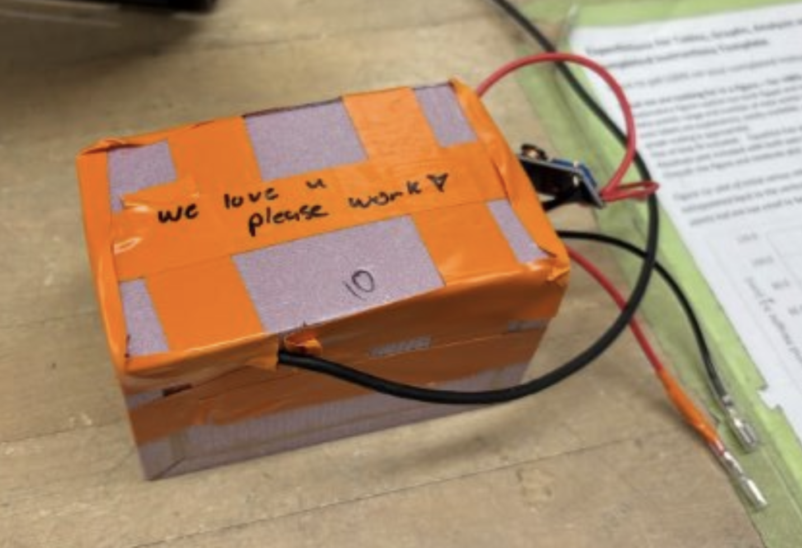
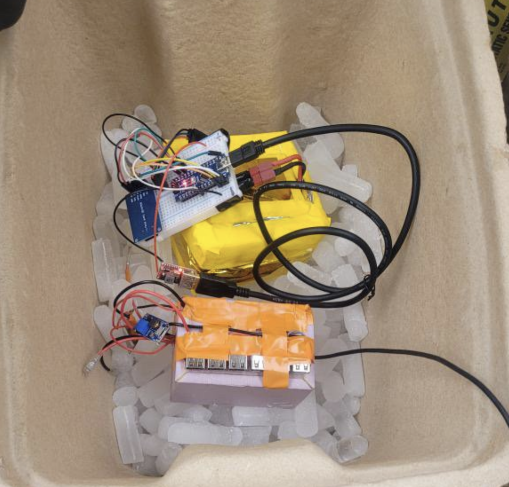
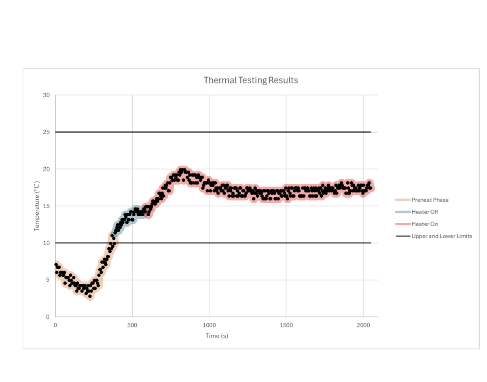
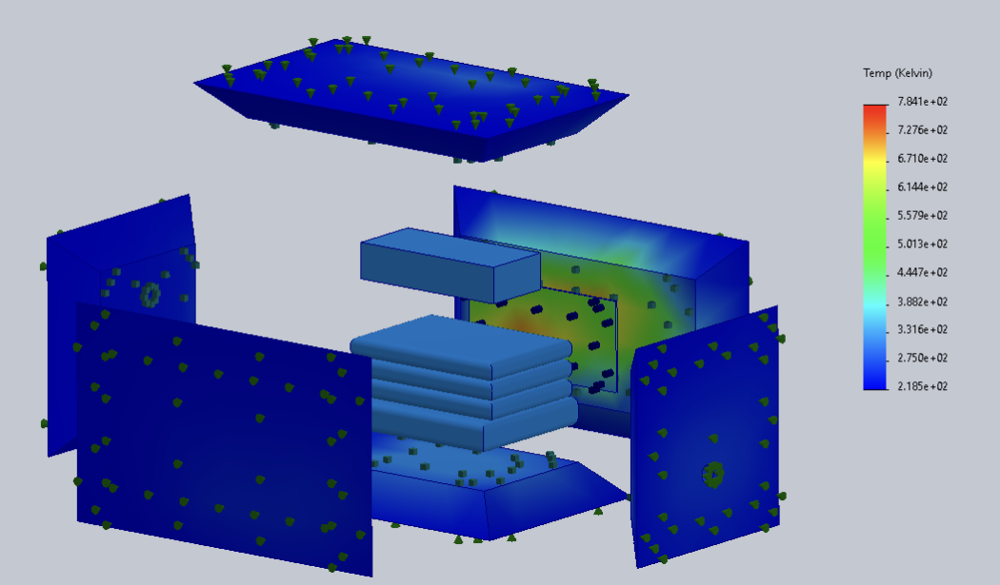
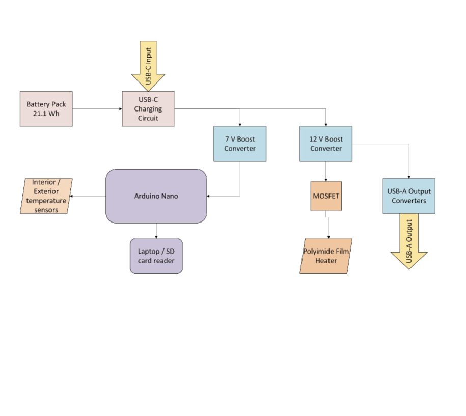
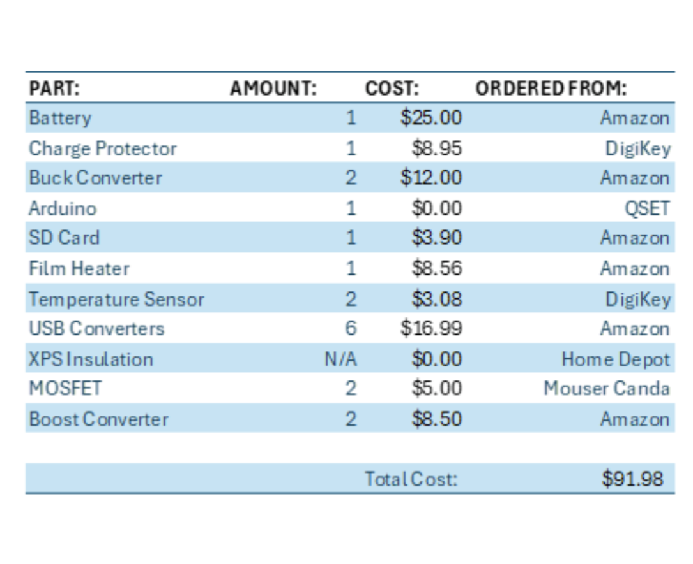

April 2025
Satellite Battery Management System
Electronics, microcontrollers, heat transfer simulation, PID control, design reports.

Overview
What this project was about.
This group project was part of my first year design course APSC 103. Our group was tasked by our client, the Queen's Space Engineering Team with creating a system capable of providing power to 6 CubeSats during a 5 hour flight in a weather balloon. The system had to withstand the ambient tempratures of -55°C in the upper atmosphere for prolonged time. The total system had to be under 150g and fit within a 6x6x10cm enclosure.
Our final design used XPS insulation lined with aluminum foil to trap heat inside the sytem. Within this inclosure was a 3.7V 20Wh battery cell attached to charging circuitry and two boost converters. One of these boost converters was attached to 6 USB outputs. The other one was attached to our active heating and data collection system, with two thermisistors, an Arduino Nano, and a PWM controlled kapton film heater.
Process
Design process.
Concept Selection
Various concepts were ideated and compared using a weighted evaluation matrix.
Modeling and Analysis
A circuit diagram was created with KiCad, as well as physical models within Solidworks. Thermal simulation was also preformed with Solidworks.
Build and Test
Everything was soldered and assembled. We calibrated the thermisistors using samples of water with known temperatures. The final product was also tested within a dry ice enclosure.
Documentation and Presentation
Our design process and results were compiled into a final design report. Our final product was also presented to our client.
Images / CAD / Analysis
Project visuals.






Tools
Skills and software.
Reflection
What I learned.
This project taught me the importance of testing and iteration during the design process. Our first solution relied on purely insulation, trapping the residual heat from the electronics inside the enclosure. After early testing we quickly realized this solution wasn't enough, and pivoted towards including the kapton film heaters. If we hadn't prototyped and tested our design so early we wouldn't have had time to impliment this active heating system.